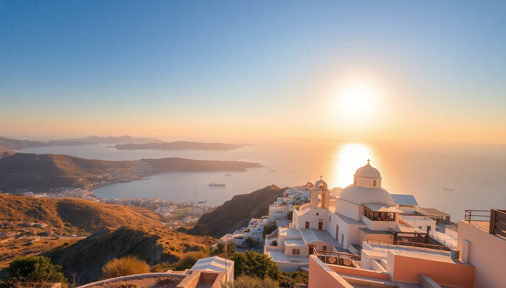

7 Days in Greece: Athens, Santorini & Mykonos Itinerary

We landed in Athens on a Tuesday morning, caffeine-deprived and slightly overwhelmed by the sheer number of ferry options. Seven days felt tight for three islands, but we made it work by sticking to a strict schedule and booking key transfers ahead. Here’s exactly how we did it—no fluff, just the logistics and honest opinions on what’s worth your time.
How do you split 7 days between Athens, Santorini, and Mykonos?
We allocated 2 days in Athens, 3 in Santorini, and 2 in Mykonos. That gave us enough time to see the Acropolis without rushing, watch a sunset in Oia, and still hit a beach club in Mykonos before the ferry back.
- Athens (Days 1-2): Focus on the historical core. We stayed in Plaka for walkability.
- Santorini (Days 3-5): Split time between Fira and Oia. We based ourselves in Fira for cheaper eats and took the local bus to Oia for sunset.
- Mykonos (Days 6-7): Stayed near Mykonos Town (Chora) for nightlife and ferry access. Agios Ioannis beach was our quiet escape.
What’s the best way to get between Athens, Santorini, and Mykonos?
Ferries are the backbone of Greek island hopping, but you need to pick the right type. We used Blue Star Ferries for the Athens-to-Santorini leg (a 5-hour ride, but stable and cheap). For Santorini to Mykonos, we took a Seajets high-speed catamaran—2.5 hours, bumpier but faster. Book both at least a week in advance in peak season.
- Athens to Santorini: Blue Star Delos (economy seats are fine, bring snacks).
- Santorini to Mykonos: Seajets Champion Jet 2 (splurge on business class for a quieter cabin).
- Mykonos to Athens: We flew back with Aegean Airlines (40 minutes vs. 5-hour ferry). The Mykonos airport is tiny—arrive 1 hour before, not 2.
Which neighborhoods in Athens are worth your time?
Plaka is touristy but convenient. We preferred Koukaki for its local cafes and proximity to the Acropolis Museum. Monastiraki is chaotic but good for souvenirs if you haggle. Skip Omonia at night—it’s sketchy after dark.
- Plaka: Great for first-timers. Stay at AthensWas Hotel for rooftop views of the Acropolis.
- Koukaki: Quieter, with excellent bakeries like Kostas Bakery (try the spanakopita).
- Monastiraki Flea Market: Worth a Sunday morning wander, but don’t buy the “ancient” coins.
Is the Acropolis worth the crowds?
Yes, but go early. We arrived at 7:45 AM (opens at 8) and had the Parthenon mostly to ourselves for 20 minutes. By 9:30, it was shoulder-to-shoulder. The Acropolis Museum is a better experience overall—air-conditioned, well-curated, and you see the originals instead of replicas.
- Acropolis: Book a skip-the-line ticket online. The walk up is steep; wear sneakers.
- Acropolis Museum: The glass floor over the excavation site is the highlight. Allow 1.5 hours.
- Temple of Olympian Zeus: You can see it from the fence. Not worth the separate entry fee.
What’s the real deal with Santorini’s sunset in Oia?
It’s crowded. Very crowded. We walked from Fira to Oia along the coastal path (about 2 hours, stunning views) and arrived at 5 PM to claim a spot near the Byzantine Castle Ruins. By 6:30, you couldn’t move. The sunset itself is beautiful, but the experience is more about the atmosphere than a private moment.
- Alternative sunset spot: The terrace at Skiza Cafe in Fira. Less crowded, same color show.
- Dinner in Oia: Kriti Restaurant has honest Cretan food and a quieter terrace. Avoid the places with staff waving menus at you.
- Red Beach: Go at 8 AM before the cruise crowds arrive. The pebbles hurt, but the water is clear.
How do you handle Mykonos without breaking the bank?
Mykonos is expensive. We saved money by staying in a studio in Tourlos (a 15-minute walk to Chora) instead of a hotel in the center. Beach clubs like Nammos charge €50 for a sunbed; we brought our own towel and sat on Paraga Beach for free. Food is the real killer—a gyro at Gioras Wood Grill in Chora costs €4, while a sit-down dinner with a view runs €30+ per person.
- Budget tip: Rent an ATV for €40/day. It’s the cheapest way to explore beaches like Kalafatis and Elia.
- Nightlife: Scorpios is a scene, but the door policy is strict. Skandinavian Bar is more relaxed and has cheap drinks early.
- Little Venice: Pretty for photos, but the bars there overcharge. Grab a beer from a corner store and sit on the seawall instead.
FAQ
Is 7 days enough for Athens, Santorini, and Mykonos? It’s tight but doable if you prioritize. You’ll spend about 5 hours on ferries total and 1 day in transit between islands. If you hate rushed trips, drop Mykonos and add a day to Santorini. We didn’t feel burned out, but we also didn’t relax much.
Should I book ferries in advance? Yes, especially in July and August. We booked Blue Star and Seajets tickets through Ferryhopper two weeks ahead. Same-day walk-up tickets often sell out for high-speed routes. If you’re prone to seasickness, pick Blue Star over Seajets—the catamarans rock more.
What’s the best month for this itinerary? May or September. June through August is peak heat and crowds. We went in mid-September: 28°C days, warm sea, and shorter lines at the Acropolis. October is cooler but still pleasant; some ferry schedules reduce frequency after mid-month.
Conclusion
- Book your Acropolis ticket online and go at 8 AM sharp. The museum is a better value than the site itself.
- Take Blue Star Ferries for the long Athens–Santorini leg; save Seajets for shorter hops between islands.
- Stay in Koukaki (Athens), Fira (Santorini), and Tourlos (Mykonos) for a balance of location and price.
- Eat gyros for cheap meals and skip the sunset dinner markup in Oia—watch from a cafe in Fira instead.
- Rent an ATV in Mykonos to reach quieter beaches without paying for taxis.